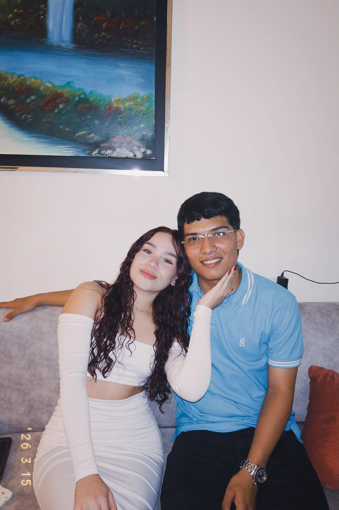
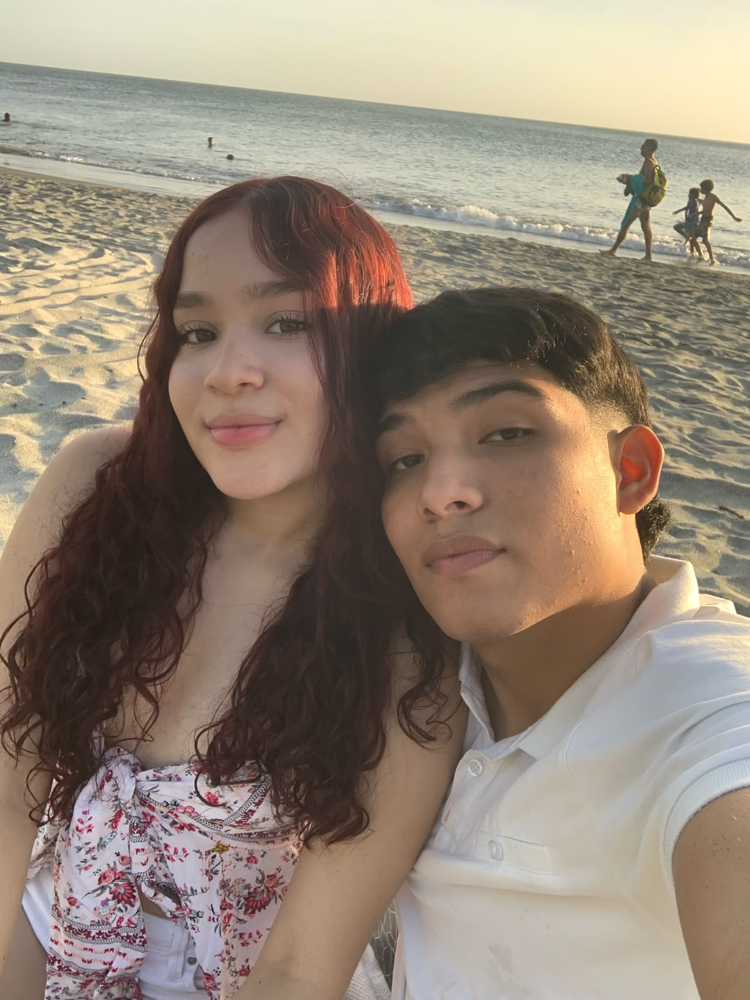
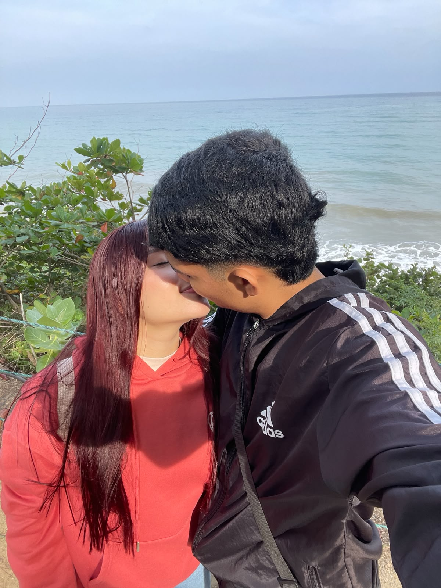
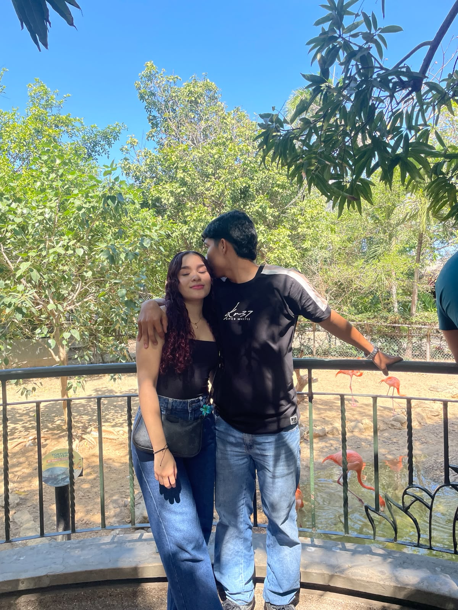
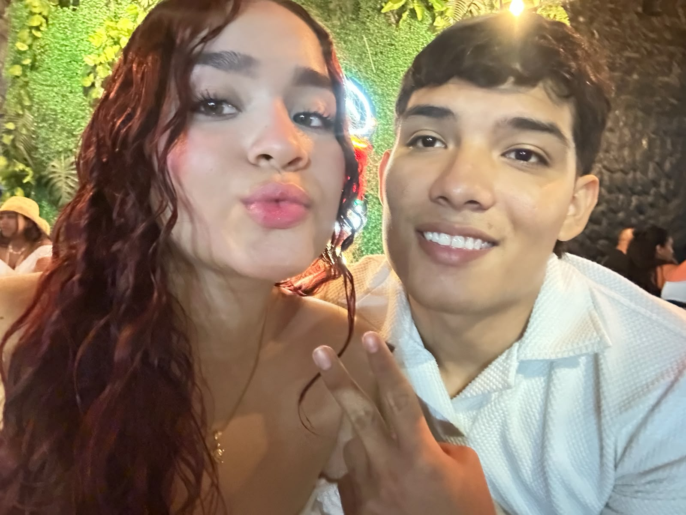
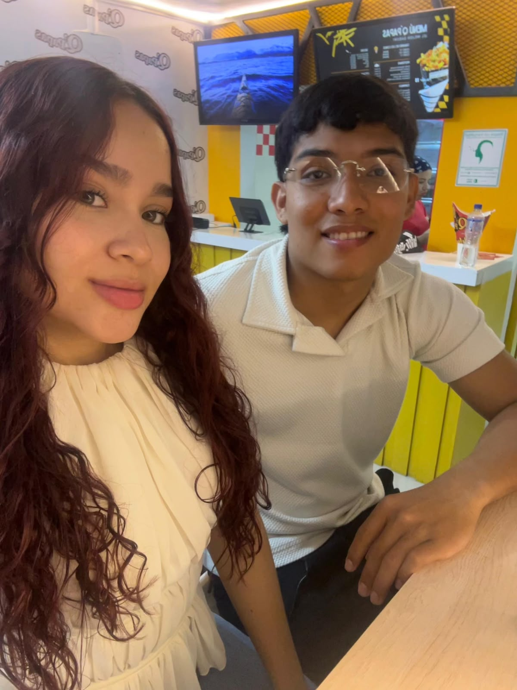

El regalo mas hermoso y la historia mas bonita que ha creado Dios. todo empieza el 1 de julio del 2025
Antes de conocerte había algo que no sabía explicar. No era tristeza, ni soledad exactamente, pero sentía que faltaba algo. Los días pasaban, pero había un espacio vacío que parecía imposible de llenar, nisiquiera las cosas que me gustaban, soñaba o queria podian hacereme sentir completo. Entonces apareciste tú, y sin darte cuenta comenzaste a cambiar la forma en que veía mis días.

Nunca imaginé que una persona pudiera llegar a significar tanto para mí, te vi caminando solita y aunque llamaste mi atencion inmediatamente, no imagine que serias una mujer tan estupenda. Lo que empezó como una simple conversación terminó convirtiéndose en lo que mas amo de mis dias. Desde el primer momento vi algo diferente en ti, tanto que me insito a lanzarme al vacio por ti, quizas lo mejor que he hecho en mis 21 años.

No puedo señalar un único instante exacto. Fue algo que ocurrió poco a poco y muy rapido . Entre conversaciones, risas, momentos compartidos y cada cosa nueva que descubría de ti, empece a sentir necesidad de estar contigo, de tenerte cerquita, literalmente no habia dia que no qusiera y pensara en estar contigo. Un día me di cuenta de que ya no imaginaba mis días sin estar juntito a ti.

Contigo aprendí a valorar cosas que antes pasaban desapercibidas. Me enseñaste que la felicidad muchas veces se encuentra en los detalles más pequeños y en los momentos mas simples, como por ejemplo cuando solo estamos tu y yo mirandonos a los ojos, cuando nos abrazamos, momentos que ya no puedo dejar de pedir y necesitar. Tu presencia hizo que muchas cosas tuvieran más sentido y que la vida se sintiera más bonita, no tengo ni idea de colores pero si se que desde que estoy contigo, todo brilla y todo es mas colorido que antes.

Amo tu forma de ser. Amo tu manera de ver el mundo. Amo la forma en que haces sentir importantes a las personas que te rodean, amo como piensas y como hablas, amo que seas tu misma, amo el color de tus ojos, el color de tus labios. Amo tu sonrisa, tu voz, tu personalidad, amo hasta como me regañas y amo cada detalle que te hace ser exactamente quien eres.

Cada recuerdo contigo tiene algo especial. Las conversaciones, las risas, los momentos inesperados y cada instante que hemos compartido forman parte de una historia que atesoro profundamente. Nuestro primer beso, nuestro primer abrazo y hasta el primer dia que te lleve a casa, nuestros primeros mensajes, nuestro primer viaje juntos, todo en mi contigo es digno de enmarcar en un porta retato. Son recuerdos que quiero conservar siempre.

Cuando pienso en el futuro, no pienso únicamente en metas o proyectos. Pienso en las personas con las que me gustaría compartirlo. Y entre todas ellas, tú ocupas el primer lugar. Porque la idea de construir familia, recuerdos, sueños y momentos a tu lado hace que el futuro se vea mucho más hermoso.
Valeria: Si algún día vuelves a abrir este libro, quiero que recuerdes algo muy simple. Llegaste a mi vida cuando menos lo esperaba y terminaste convirtiéndote en la persona más importantes para mí.. Gracias por cada conversación, cada sonrisa y cada momento compartido. No sé qué nos depare el futuro, pero sí sé que quiero que estes conmigo en cada uno de los dias que se nos aproximan quizas seran dificiles, pero si algo se complica, quiero estar contigo, y nunca soltarte, porque eres el amor de todas mis vidas Con amor, Con amor, Samuel Esteban❤️ Fin... o tal vez apenas el comienzo.
Página 1 de 15